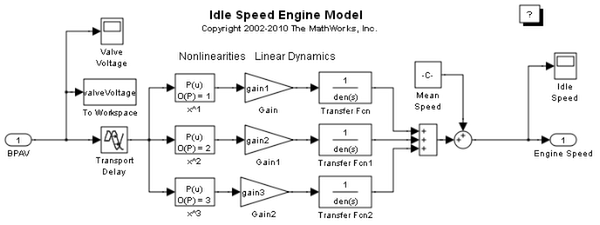
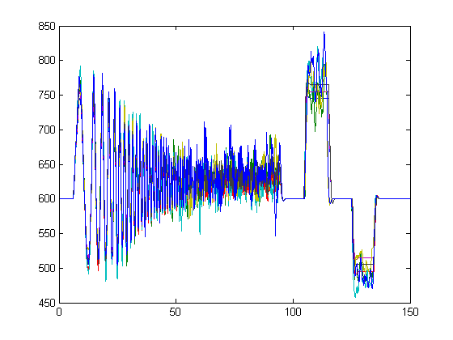

PARFOR を使用したラピッド アクセラレータ シミュレーション
このデモでは、ある範囲の入力値およびパラメーター値について並列シミュレーションを実行する必要があるアプリケーションでラピッド アクセラレータを使用する方法を説明します。
このデモでは、エンジンのアイドル回転数をシミュレートするエンジンのアイドル回転数モデルを使用します。このモデルの入力はバイパス空気弁の電圧、出力はアイドル回転数です。
2 セットの弁電圧を持つ PARFOR を使用し、2 つの値の範囲にわたって変換関数の 3 つのゲイン パラメーターのうちの 2 つを独立に変化させることによって、並列シミュレーションを実行します。したがって、全部で 8 セットの異なるシミュレーションを実行することになります。
このデモの作成に使用されたスクリプト ファイルを変更すれば、非常に簡単にこのデモを自分のアプリケーション用にカスタマイズすることができます。スクリプト ファイルを編集するには、このページの左上隅のリンクをクリックしてください。MATLAB® からこのデモを実行するには、右上隅のリンクをクリックしてください。このデモを実行する前に、現在のディレクトリが書き込み可能なディレクトリであることを確認してください。
目次
手順 1:準備
まず、シミュレーション モードがラピッド アクセラレータに設定されているモデルを開きます。既定の入力データと必須パラメーターは、モデル ワークスペースに事前に読み込まれています。ラピッド アクセラレータ モードで実行するとファイルが余分に作成されるため、一時ディレクトリに切り替えます。
パラメーター gain2 と gain3 は、後でユーティリティ関数 Simulink.BlockDiagram.modifyTunableParameters を使用して変更できるように、調整可能なパラメーターとして指定されています。調整可能なパラメーターを選択してそれらのプロパティをグラフィカルに設定する方法の詳細は、以下の [モデル パラメーター設定] ダイアログ ボックスに関するヘルプ ページを参照してください。
既定の入力データと時間データを、後で変更して SIM コマンドに渡すことができるように、変数にコピーします。
% Open model: mdl = 'sldemo_raccel_engine_idle_speed'; open_system(mdl); curDir = pwd; cd(tempdir); % Copy input data inpData = evalin('base', 'inpData'); tData = evalin('base', 'time');
手順 2:ラピッド アクセラレータ ターゲットの作成
モデル用のラピッド アクセラレータ実行可能ファイルを作成し、既定のランタイム パラメーター セットを取得します。
rtp = Simulink.BlockDiagram.buildRapidAcceleratorTarget(mdl); close_system(mdl, 0);
### Building the rapid accelerator target for model:sldemo_raccel_engine_idle_speed ### Successfully built the rapid accelerator target for model:sldemo_raccel_engine_idle_speed
手順 3:パラメーター セットの作成
手順 2 の既定の rtp 構造体を使用して、モデル内の調整可能な変数に異なる値を使用した新しい構造体を作成します。パラメーター gain2 と gain3 の値を変えると、アイドル回転数がどのように変化するのかを確認しようとしています。そのため、gain2 と gain3 の値を変えて異なるパラメーター セットを生成し、その他の調整可能な変数はそれぞれの既定値のままにしておきます。
ユーティリティ関数 Simulink.BlockDiagram.modifyTunableParameters は、異なるパラメーター値を持つ rtp 構造体を作成するのに便利な手段です。
gain2_vals = 25:10:35; gain3_vals = 20:10:30; num_gain2_vals = length(gain2_vals); num_gain3_vals = length(gain3_vals); numParamSets = num_gain2_vals*num_gain3_vals; % Create parameter sets: paramSets = cell(1, numParamSets); idx = 1; for iG2 = 1:num_gain2_vals for iG3 = 1:num_gain3_vals paramSets{idx} = ... Simulink.BlockDiagram.modifyTunableParameters(rtp, ... 'gain2',gain2_vals(iG2), ... 'gain3',gain3_vals(iG3)); idx = idx+1; end end
手順 4:入力セットの作成
既定の入力値のベクトルを摂動させて、新しい入力値のベクトルを取得します。
このデモでは、エンジンのアイドル回転数を、異なるパラメーター値の弁電圧の関数としてプロットします。
inpSets{1} = inpData;
rndPertb = 0.5 + rand(length(tData), 1);
inpSets{2} = inpSets{1}.*rndPertb;
numInpSets = length(inpSets);
手順 5:SIM コマンド引数のセットの作成
パラメーター-名前-値の構造体のセル配列を作成します。このセル配列は、PARFOR ループ内から呼び出される SIM コマンドに渡されます。
SIM コマンドをラピッド アクセラレータ モードで実行するには、[RapidAcceleratorUpToDateCheck] フィールドを [オフ] に設定し、[RapidAcceleratorParameterSets] フィールドを使用してパラメーター セットを渡す必要があります。
また、セル配列内の外部入力もすべて収集します。後でそれらの各入力に、ワーカーのベース ワークスペース内の変数名として「externalInput」を割り当てます。
numSimCmdArgStructs = numParamSets*numInpSets; simCmdParamValStructs = cell(1, numSimCmdArgStructs); externalInput = cell(1, numSimCmdArgStructs); paramValStruct.SaveTime = 'on'; paramValStruct.SaveOutput = 'on'; paramValStruct.LoadExternalInput = 'on'; % 'externalInput' is the name of the base workspace variable of % the MATLAB worker sessions containing the external inputs data paramValStruct.ExternalInput = 'externalInput'; paramValStruct.RapidAcceleratorUpToDateCheck = 'off'; paramValStruct.RapidAcceleratorParameterSets = []; idx = 1; for paramSetsIdx = 1:numParamSets for inpSetsIdx = 1:numInpSets simCmdParamValStructs{idx} = paramValStruct; simCmdParamValStructs{idx}.RapidAcceleratorParameterSets = ... paramSets{paramSetsIdx}; externalInput{idx} = [tData, inpSets{inpSetsIdx}]; idx = idx + 1; end end
手順 6:Matlabpool の起動
コードのコメントを解除して、Matlabpool を起動します。以下のコード行により、4 つのワーカー MATLAB セッションが開始されます。その後、PARFOR がこれらの 4 つのワーカー セッションにジョブを分配します。
% matlabpool open 4;
手順 7:PARFOR でのシミュレーション
異なるパラメーター値と入力ベクトルが含まれた異なる引数セットを持つ PARFOR を使用して、モデルを並列にシミュレートします。シミュレーションを実行している MATLAB ワーカー セッションのベース ワークスペースで、シミュレーションに対応する入力ベクトルを割り当てます。PARFOR ループ内で EVALIN(‘base’) と ASSIGNIN(‘base’) を使用するということは、ワーカー マシンのベース ワークスペースが参照されるということなので、一般的には推奨されません。ただし、現在のデモでは、各セッションのベース ワークスペースには変数「externalInputs」が必要です。このため、PARFOR 内で ASSIGNIN(‘base’) を使用することは、ここでは妥当です。
out = cell(1, numSimCmdArgStructs); parfor(i = 1:numSimCmdArgStructs) assignin('base', 'externalInput', externalInput{i}); %#ok<PFEVB> out{i} = sim(mdl, simCmdParamValStructs{i}); end
手順 8:結果のプロット
異なるパラメーター値と入力について、時間に対するエンジンのアイドル回転数をプロットします。変数「out」は、各シミュレーションのシミュレーション データが含まれている Simulink.SimulationOutput オブジェクトのセル配列です。
for i=1:numSimCmdArgStructs t = out{i}.find('tout'); y = out{i}.find('yout'); plot(t, y) hold all end fprintf('\n Contents of the out{1}:\n'); display(out{1});
Contents of the out{1}:
Simulink.SimulationOutput:
tout:[1041x1 double]
ScopeData:[1041x2 double]
valveVoltage:[1041x1 double]
yout:[1041x1 double]
 手順 9:Matlabpool を閉じる
元のディレクトリに戻ります。その前に Matlabpool が起動されていた場合は、それを閉じる必要があります。以下のコードの 2 行目のコメント記号を削除すると、Matlabpool が閉じられ、それに伴ってワーカー セッションが閉じられます。詳細は、PARFOR および MATLABPOOL に関するドキュメンテーションを参照してください。
cd(curDir);
% matlabpool close